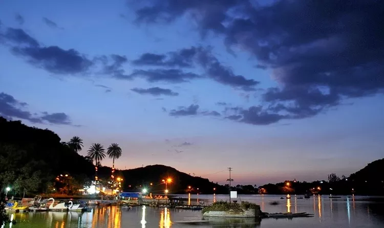

The beautiful Dilwara Jain temples are situated at just 2.5 km from Mount Abu. The temples are known for their beautiful architecture and intricate carvings.
The temples were built between the 11th and 13th centuries by Chalukya. There are five temples in the complex that exhibit excellent architectural styles and exquisite carvings.The Dilwara temples are considered a sacred place of pilgrimage and also the most beautiful among all Jain temples. Pilgrims visit the Dilwara Jain temples and perform puja. Devotees are required to take a bath and dress accordingly to perform the puja.
MOUNT ABU
PLACES TO VISIT
01 DILAWARA JAIN TEMPLE

02 MOUNT ABU WILDLIFE SANCTUARY
The Mount Abu Wildlife Sanctuary is situated in the Aravalli Range of Rajasthan and was declared a wildlife sanctuary in 1980. The wildlife sanctuary sprawls on a plateau and measures 19 km in length and 6 km in width.The Mount Abu Wildlife Sanctuary abounds in flora and fauna and is home to about 112 plant families, 250 species of birds and a large number of wild animals such as hedgehogs, porcupines, Indian hares, mongoose, pangolin, bears, wild boars, langurs, and many others.
The sanctuary provides an ideal habitat to sloth bears too..
03 NAKKI LAKE

Nakki Lake is situated in Mount Abu. The lake derives its name from a legend that it was dug out using nails, which is called Nakh in Hindi and Sanskrit.
The Nakki Lake is believed to be very sacred and is a popular pilgrimage and tourist destination.According to legend, the lake was dug by gods to stay protected from the Bashkali demon. Another legend suggests that it was dug out by a sculptor called Rasiya Balam to win the king’s daughter’s hand in marriage. However, the king refused to give his daughter in marriage to Rasiya Balam.
04 GURU SHIKHAR
The Guru Shikhar is one of the peaks in the Arabuda Mountains of Rajasthan. It is also the highest point in the Aravalli Range in Rajasthan.
Guru Shikhar rises to an elevation of 5,676 feet and is 15 km from Mount Abu. There is a temple dedicated to Dattatreya, dedicated to Lord Vishnu, at the top of Guru Shikhar in a cave. Very
close to the temple, the Physical Research Laboratory operates the Mount Abu Observatory.Also check, Some of the best places to visit in Mount Abu.